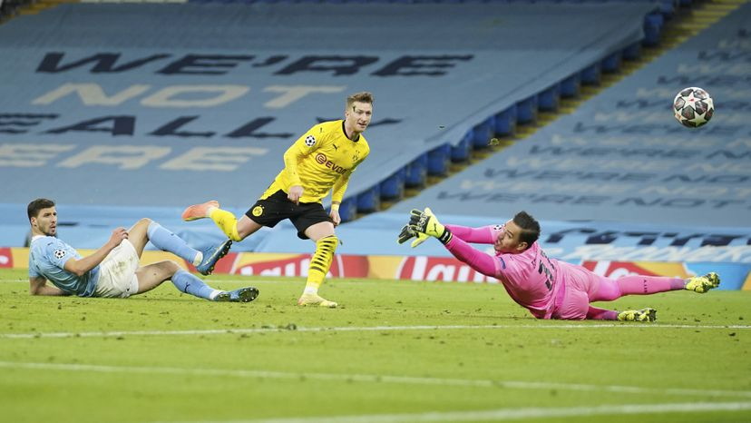

<!DOCTYPE html>
<html lang="es"></html>
    <head>
        <meta charset= "utf-8"/>
        <meta name = "Keywords" content="trabajo AIEP El Faro">
        <title>“El Faro”</title> 
        <link rel="stylesheet" href="estilos.css">           
    </head>
    <body>
    <header>
        <h1>Deportes</h1>
        <ol type="a">
            <li>
                <a href="index.html">Inicio</a>
            </li>   
            <li>
                <a href="Deportes.html">Deportes</a>
            </li>
            <li>
                <a href="Negocios.html">Negocios/Emprendimientos</a>
            </li>
        </ol>
    </header>
    <section>
        <article>
            <table>

            
                <tr>
                    <td>
                        
                        <h3>futbol</h3>
                        <h1>Racismo en fútbol español: Plantel del Valencia abandonó cancha en Cádiz tras insulto a defensa</h1>
                        <h2>¿Qué pasó?</h2>
                        <p>Los futbolistas del Valencia abandonaron la cancha del Estadio Ramón de Carranza, de Cádiz, poco después de la media hora de juego, después que el defensa francés Mouctar Diakhaby recibiera insultos racistas de un rival, según denunció el club en su cuenta de Twitter.</p>
                        <br>
                        <video src="mp4/Por Insulto Racista.mp4"controls width="560px" height="315 px"></video>
                    </td> 
                   
                </tr>
            </table>
        </article>
        <article>
            <table>

            
                <tr>
                    <td>
                        
                        <h3>Liga De Campeones</h3>
                        <h1>El Dortmund se rebela ante el City</h1>
                        <h2>El equipo alemán mete en problemas al líder de la Premier con un juego inesperadamente articulado. Foden, sobre la bocina, consigue la victoria por 2-1</h2>
                        
                        <p>Marco Reus, que no metía un gol desde diciembre, reapareció a lo grande con la venia de Haaland, asistidor genial, para confirmar que el Manchester City se metió en un berenjenal. La eliminatoria, que se anunciaba como un desfile para el equipo inglés, fue de todo menos desequilibrada. El 1-1 de Reus reflejó en el marcador los problemas que sorprendieron al City a lo largo de la noche. De Bruyne y Foden, protagonistas en los dos goles, lograron sacar el partido adelante. Pero la eliminatoria se abre de par en par.</p>
                        <p>“Jugamos después de haber conseguido 26 victorias en los últimos 27 partidos”, dijo Pep Guardiola tras la velada; “y ellos venían de perder en la Bundesliga, en donde son quintos. La presión estaba sobre nuestros hombros, no sobre los suyos. A nosotros nos daban por ganadores antes de jugar, y ellos son muy buenos”.</p> 
                        <p>No solo la prensa británica había declarado el favoritismo absoluto del City. Los directivos que encabezaron la comitiva del Dortmund en Manchester acudieron convencidos de que su equipo tendría muy pocas posibilidades de responder al juego abrumador del rival que les había tocado en suerte. Se equivocaron. Ya sucedió algo parecido en el Sánchez Pizjuán cuando Edin Terzic, el balbuceante novato que se sienta en el banquillo del club alemán, actuó como si todo estuviera perdido. De nuevo liberado de sus escrúpulos, en el Etihad el técnico se deshizo de Delaney y le dio las riendas del equipo a Dahoud y a Can; alargó el recorrido de Guerreiro juntándolo con los interiores y liberó al impetuoso Bellingham de funciones administrativas para asignarle un mayor peso en el ataque, línea donde sorprendió con el debut como titular de Ansgar Knauff, un atrevido canterano de 19 años cuya misión consistió en correr a la espalda de los laterales del City. Rodeado por esa compañía, Marco Reus recibió balones que le engancharon al partido. Con Reus presente en casi todas las jugadas, el Dortmund pasó de practicar el fútbol vulgar que exhibe en la Bundesliga a transformarse en algo más que una procesión aturdida que sigue los pasos de Haaland.</p>
                        <p>Recobrada su naturaleza aventurera, el Dortmund provocó una reacción de sorpresa en el City. El líder de la Premier, tan acostumbrado a dominar todos los partidos, sufrió para encontrar su sitio en el campo ante un adversario que iba filtrando pases con desinhibición. Una salida precisa de Akanji y una combinación de Dahoud con Reus y Haaland, desembocó en un zurdazo de Bellingham que forzó la primera parada de la noche. Ederson despejó la pelota y verificó que si sus compañeros no se imponían en la presión como suelen, el trabajo se le acumularía en su área.</p>
                        <p>El Dortmund insistió. Contra el aire indeciso que le caracteriza en el campeonato alemán, dio un paso al frente. Cada vez que pudo avanzar, fue a la presión. Muchas veces quedándose mano a mano atrás. En plan suicida. El arrebato generó desconcierto. Cancelo comenzó a esconderse para que no le dieran la pelota en el medio, Rodri vivió bajo acoso, Gundogan se desdibujó entre líneas por apoyar atrás, y Dias y Stones no consiguieron cerrar el espacio que los separaba de los volantes y allí se escurría Haaland. Cada relación del City con la pelota resultaba problemática y en las transiciones defensivas no lograba interrumpir líneas de pase. Desde la banda, Guardiola contemplaba el escenario con preocupación cuando el enemigo acudió en su auxilio.</p>
                        <p>Emre Can, que debe ir perdido después de jugar un día de lateral, otro de central y otro de volante, midió mal una entrega con su pierna mala. La pelota, que iba a Guerreiro, acabó en el pie izquierdo de Mahrez. Pura esponja. El argelino se la dio a De Bruyne y el belga dirigió uno de esos contragolpes en los que va crecido. Pocos jugadores saben conducir la pelota tan rápido y al mismo tiempo controlar con la mirada todo lo que se mueve por delante. Su pase a Foden acabó en un centro. El balón recorrió toda el área y se iba por la línea de fondo cuando encontró el pie izquierdo de Mahrez, otra vez. Entonces el pase tenso fue a De Bruyne, que lo mandó a la red de un latigazo. No habían transcurrido 20 minutos y el City respiraba con el 1-0.</p>
                        <h4>Guardiola: “Les pedí que ganaran, solo eso”</h4>
                        <p>Entonces Ovidiu Hategan, el árbitro, tomó dos decisiones determinantes. Primero anuló un penalti a favor del City —aparente falta de Can sobre Rodri a la salida de una falta lateral— por indicación del VAR. Luego pitó falta de Bellingham a Moraes justo cuando el inglés se quedaba solo ante el arco. Otro caso para el debate jurídico.</p>
                        <p>La segunda mitad fue una guerra de desgaste. El City administró su ventaja con prudencia y el Dortmund perdió energía pendiente de lo que inventara Haaland. Fue entonces cuando Hitz paró un disparo a bocajarro de Foden y en la otra portería Ederson paró un mano a mano con el noruego, que recibió de Dahoud y cuerpeó y derribó a Dias antes de quedarse solo ante el arquero. Cuando Haaland quiere usar su carrocería, más vale disponerse a perder. Dias perdió en el choque pero Haaland no consiguió equilibrarse lo suficiente para colocar el tiro.</p>
                        <p>La jugada anticipó el 1-1, obra de un pase prodigioso de Haaland a Reus. Esta vez el noruego bailó a la espalda de Rodri, se giró ante Stones como si sus dos metros de altura no fuesen un impedimento, y apretado como estaba, a un toque, le regaló a su capitán un balón predestinado. El empate parecía sellado cuando De Bruyne habilitó a Gundogan con el permiso de Meunier. “Gundogan hizo un control fantástico”, lo celebró Guardiola. Asistido por el alemán, Foden metió el 2-1 sobre la bocina y cerró un primer acto inesperado.</p>
                        <p>“Podemos mejorar algunas cosas para la vuelta”, reflexionó el técnico español, en la conferencia de prensa telemática que sucedió al partido. “Queremos ajustar la presión, queremos ajustar nuestra salida de balón, nuestro control de sus contragolpes... Pero ante todo quiero felicitar a mis jugadores por un verdadero partido de Champions. Por como se juntaron, lucharon y compitieron contra la adversidad, no porque hiciéramos algo mal sino porque el oponente tiene calidad. Les pedí que ganaran el partido. Solo eso. Y eso hemos hecho”</p>
                        <br>
                        
                    </td> 
                   
                </tr>
            </table>
        </article>
        <article>
            <table>

            
                <tr>
                    <td>
                        <h3>futbol</h3>
                        <h1>En busca del sueño olímpico: La Roja Femenina viaja a Turquía, pero sin vacunas</h1>
                        <h2>La selección se trasladará este jueves a Europa para enfrentar a Camerún con la ilusión de obtener la anhelada plaza para los JJ.OO. de Tokio. Viajan sin recibir vacunas en contra del COVID-19 y en medio de la polémica del técnico José Letelier con dos seleccionadas</h2>
                        
                        <p>La Roja femenina alista los últimos detalles de cara a lo que será uno de sus partidos más importantes. La Selección Chilena enfrentará el 10 y el 13 de abril a su par de Camerún, con la ilusión de clasificar a los Juegos Olímpicos de Tokio.
                            Las dirigidas por José Letelier disputarán ambos duelos en el complejo Arslan Zeki Demirci, en la ciudad turca de Antalaya.
                            El sueño olímpico no ha estado lejos de la polémica vinculada al COVID-19. Esto, porque las jugadoras de la Roja no serán inoculadas, pese a que el Club Deportes Antofagasta (CDA) sí logró vacunar a todo su plantel de cara al recién comenzado Campeonato Nacional.
                            El conjunto Puma logró procesar una solicitud local en la región de Antofagasta para inocular a sus jugadores y cuerpo técnico, la cual fue aprobada.
                            Desde la Asociación Nacional de Fútbol Profesional (ANFP) mantuvieron su decisión y sugieren que las jugadoras y el cuerpo técnico actúen de acuerdo al protocolo de autocuidado por la pandemia.
                            Al respecto, el estratega nacional explicó en conferencia de prensa este miércoles que el proceso de vacunación “ha sido difícil”, debido a que las integrantes del plantel “también han tenido participación en los clubes”.
                            En cuanto a las normas sanitarias, apuntó que “nos hemos basado en los protocolos del ministerio y del cuerpo médico, no sólo ahora sino desde mucho tiempo”.
                            Pero no es todo. Para el trascendental duelo con Camerún, la Roja viajará sin dos de sus figuras: la atacante María José Rojas y la defensa Su Helen Galaz.
                            La goleadora no fue considerada para esta instancia y según declaró el DT a Contragolpe, “no tiene nada más que relación con decisiones técnicas. Así como, en esta convocatoria, también hay jugadoras que no han sido citadas”.
                            A esto se suma la auto marginación de la defensora de Santiago Morning, quien a través de su cuenta de Instagram informó la decisión de no participar del actual proceso para clasificar a Tokio.
                            “No pretendo esconder mi incomodidad con situaciones discordantes durante este proceso en curso”, expuso en medio de las palabras para hacer pública su salida
                            </p>
                        <br>
                        
                    </td> 
                   
                </tr>
            </table>
        </article>
        <section>
        

                
            
              
    </body>

</html>